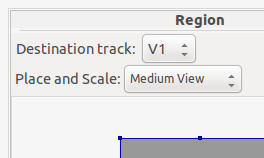

Flowblade Movie Editor uses Compositors to mix images from two different tracks.
Compositing Modes
The way that Compositors work is defined by a Compositing Mode. Users can select Compositing Mode to suit their preference or editing needs of a particular Sequence.
To set Compositing Mode for a Sequence select it from Sequence -> Compositing Mode sub menu.
Top Down Free Move
This is the most powerful and complex Compositing Mode. Users can set destination tracks and positions of Compositors freely and create node tree compositions if needed.
Top Down Auto Follow
Users can set destination tracks freely and create node tree compositions if needed. Compositors follow their origin clips automatically and users can only add one compositor per clip.
Standard Auto Follow
This is the most simple and easiest to use Compositing Mode. Compositors follow their origin clips automatically and users can only add one compositor per clip. All Compositors have track V1 as their destination track. It is not possible to create node tree compositions.
Standard Auto Follow Compositing Mode
Compositing in Standard Auto Follow mode is similar to using layers in applications like Gimp and Photoshop. This mode works most similarly to way that most other video editors work.
On the Timeline a Compositor is displayed as a purple square with rounded corners.
Parameters defining the resulting image are edited in the Compositors tab.
Workflow
- Creating a Compositor
- Click Right Mouse on any clip on tracks from V5 to V2 and select for example Add Compositor -> Dissolve or Add Blender -> Softlight from popupmenu to create a new Compositor.
- Editing Compositor Parameters in Compositors Tab
- Click Compositor with Left Mouse.
- Click Right Mouse on any Compositor and select Open In Compositor Editor
- Edit parameters using value editors.
- Deleting Compositor
- Click Left Mouse on any Compositor to select it and press Delete key.
EXAMPLE: All tracks need Compositors when creating compositions with more the 2 tracks
In this mode all Compositors have track V1 as their target target.
Because of this adding a Compositor to only the top track can make it dissapper.
When composition has more then 2 tracks, all clips need to have Compositors to get the expected result.
Only top track has Compositor

Clip on track V3 has Compositor which composites it on track V1. However, the Clip on track V2 is on top of the composited image on track V1 and gets displayed.
All tracks have Compositors
Images on all tracks are composited on track V1 to get the expected result.
Top Down Free Move and Top Down Auto Follow Compositing modes
In these modes Compositors have a Source track and a Destination track.
On the Timeline a Compositor is displayed as a rectangular object on top of two tracks. Source track is always the one above Compositor, but Destination track may be any of the tracks below it.
Parameters defining the resulting image are edited in the Compositors tab.
Workflow
By combining multiple tracks and multiple Compositors complex composite images can be achieved.
- Creating a Compositor
- Click Right Mouse on any clip on tracks from V5 to V2 and select for example Add Compositor -> Dissolve or Add Blender -> Softlight from popupmenu to create a new Compositor.
- Trimmimg or Moving a Compositor
- To trim Compositor start and end points: Press and drag Left Mouse near either end of Compositor on Timeline.
- To move Compositor: Press and drag Left Mouse in the middle of Compositor on Timeline.
- Editing Compositor Parameters in Compositors Tab
- Double click Compositor with Left Mouse.
- Click Right Mouse on any Compositor and select Open In Compositor Editor
- Edit parameters using value editors.
- Deleting Compositor
- Click Left Mouse on any Compositor to select it and press Delete key.
Compositor are executed from top to bottom in Top Down Compositing modes
In Flowblade Movie Editor the order of rendering is top-to-bottom, instead of bottom-to-top like in Gimp or Photoshop. When attempting certain type of multilayer composites this yields results that seem unintuitive, unless the user is aware of rendering order of Compositors.Rendering A Composited Frame
- For each frame it is checked if there is a Compositor covering this frame on the top most track.
- If such Compositor is found, do composite on Destination track.
- Frame on Destination track is now altered and if that frame is used as source the altered version is used
- Check if frame on next track below has compositor and if Compositor is found render the composite image
- This is done for each track.
- Output image on is from the topmost track that has media on the frame and does not have a compostor on the frame.
EXAMPLE: Creating a 3-layer composite
In this example we demonstrate how top-to-bottom Compositor order affects compositing. We are trying to make word 'GO' apperar on top of 2-color background made by combining red and blue Color Clips using 'Free Stripes' wipe.
Media Items and desired result
To make alpha transparency work the GO.PNG graphic has to composited using 'Dissolve'.
Clips: RED and BLUE Color Clips and GO.PNG graphic with alpha transparency
Desired result

Gimp/Photoshop style layer order yields wrong result
Here we have arranged clips on the tracks as we would arrange layers in Gimp.
Gimp style layer order

What happens here is that first 'GO.PNG' is composited on 'RED' Color Clip, and the resulting image is composited using 'Free Stripes' wipe on top of 'BLUE' Color Clip. We get the wrong result.
Wrong result

Correct layer order when compositing order is top-to-bottom
Here we have arranged clips in correct order for the desired result.
Correct layer order

Here 'RED' Color Clip is first composited using 'Free Stripes' wipe on 'BLUE' Color Clip. After that 'GO.PNG' is composited on top of the resulting image (that is already rendered on track V1) using 'Dissolve' to get final output image.
Destination track in 'Region' Compositor is V1, Source track is V3
Desired result